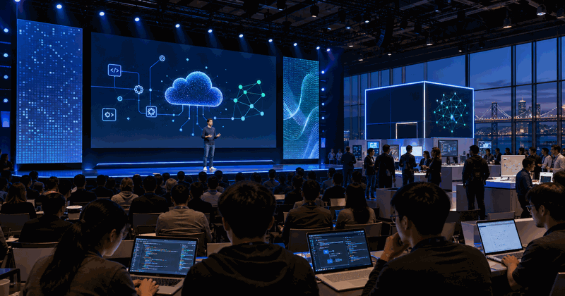
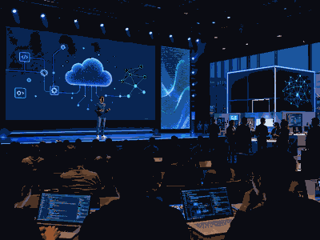

Developer conference
Microsoft Build
Microsoft Build is the developer event for Azure, Windows, GitHub, Copilot and production AI workflows.

More Developer ConferencesGo back to the topicSee related technology events and nearby topics.
Microsoft Build is useful because it turns vendor roadmaps into dates, demos and concrete things builders can watch.
The year slide carries dates and planning details. The parts slide keeps keynote, sessions and showcase separate.
| Year | Host / place | Country |
|---|---|---|
| 2026 | San Francisco | |
| 2025 | San Francisco | |
| 2024 | San Francisco | |
| 2023 | San Francisco | |
| 2022 | San Francisco | |
| 2021 | San Francisco |
Keep records as verified launch history, not generic hype.
- 2-3 Jun 2026 is the selected edition.
- Host context:
 United States.
United States. - Primary user value: AI systems, cloud and developer workflows.
Edition guide
Microsoft Build 2026
Switch between recent editions without leaving the one-slider.
Use the official event site before booking travel or planning streams.
Current edition date from build.microsoft.com.
Streaming, registration and venue access can change by edition.
Use the parts slide for the main event structure.
The general guide stays evergreen while this slide changes by edition.